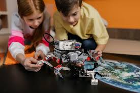

CONTEXTUALIZACIÓN

La robótica educativa se ha convertido en una herramienta clave en el desarrollo de habilidades técnicas y cognitivas en los estudiantes, integrando disciplinas como la ciencia, la tecnología, la ingeniería y las matemáticas (STEM). Su uso en el aula fomenta el pensamiento lógico, la creatividad y la resolución de problemas, preparando a los estudiantes para los desafíos del mundo digital y automatizado en el que vivimos (Telefónica, 2024).
En este contexto, surge Danbot, un robot explorador con sensor de color diseñado para interactuar con su entorno mediante la detección de colores. Este proyecto permite a los estudiantes aplicar conocimientos de electrónica y programación en un entorno práctico e interactivo, fortaleciendo sus competencias en la construcción y optimización de sistemas automatizados (AdminEsemtia, 2022).
El desarrollo de Danbot no solo ofrece un enfoque innovador para el aprendizaje, sino que también potencia el trabajo en equipo y la capacidad de innovación. A medida que los estudiantes diseñan, programan y prueban el robot, enfrentan retos que los motivan a mejorar continuamente sus habilidades y a comprender la importancia de la tecnología en la resolución de problemas reales.